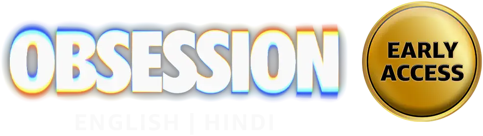

FEATURED THIS WEEK
A NIGHTFLIX ORIGINAL

When a mysterious signal arrives from the edge of the galaxy, one crew risks everything to discover what lies beyond the stars.
NIGHTFLIX • FEATURED
YOUR NEXT OBSESSION
Top Movies
BINGE-WORTHY STORIES
Longest Play: Most Popular
PICK UP WHERE YOU LEFT OFF